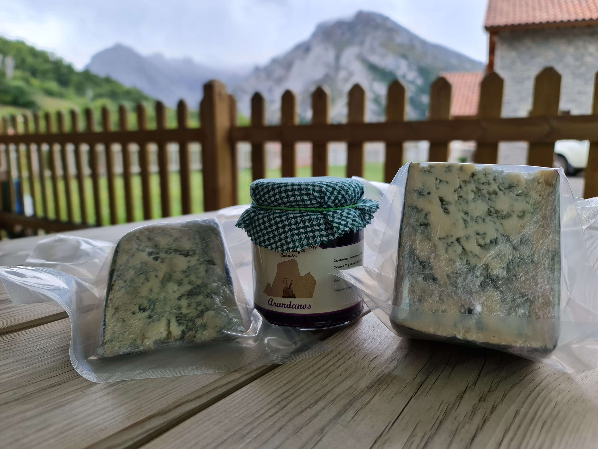

Presentación
Concejo de Cabrles

Ubicación Concejo de Cabrales
El concejo se encuentra enclavado en pleno corazón de los Picos de Europa, una impresionante cadena montañosa que atrae a turistas de todo el mundo. Su principal núcleo urbano es la villa de Carreña, donde se encuentran la mayoría de los servicios y equipamientos del municipio.
Conocido
Cabrales es conocido por ser el lugar de origen del queso que lleva su nombre, un producto artesanal elaborado con leche cruda de vaca y madurado en cuevas naturales de la zona. Además, el municipio cuenta con una gran variedad de paisajes y senderos para realizar rutas de montaña y actividades al aire libre.
Resumen
El Concejo de Cabrales es un lugar con una rica historia y cultura, rodeado de impresionantes paisajes naturales y con una oferta turística y gastronómica de primer nivel.
El Queso
Imágenes de Sotes de Cabrales